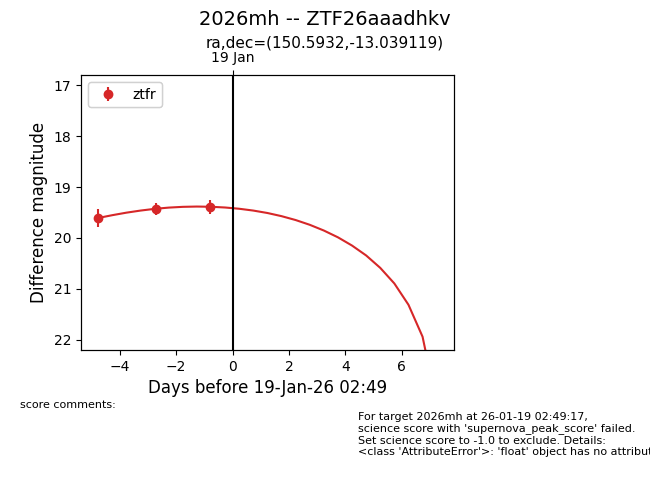
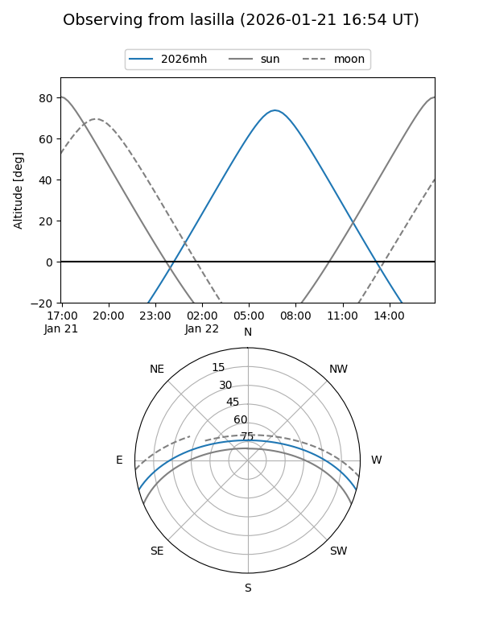
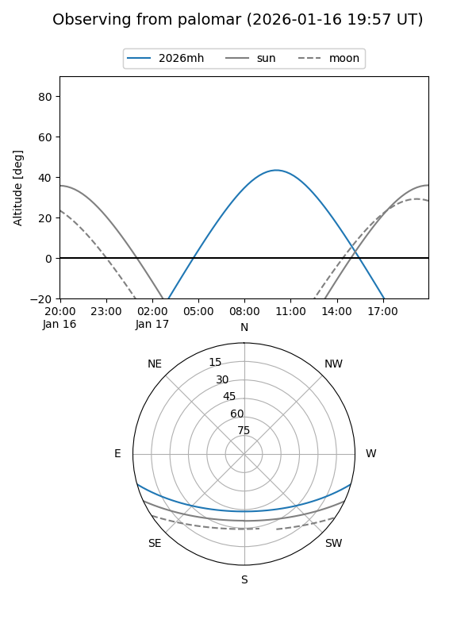
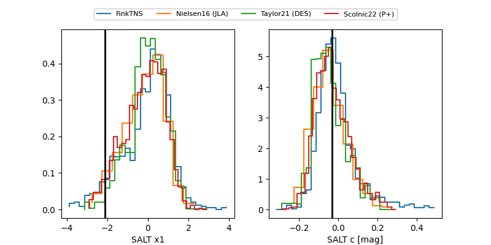

2026mh
Target 2026mh at 2026-01-25 18:16
Aliases and brokers:
FINK: link
Lasair: link
ALeRCE: link
TNS: link
YSE: link
alt names
ZTF26aaadhkv (ztf,fink_ztf)
2026mh (tns,yse)
Coordinates:
equatorial (ra, dec) = 150.5932,-13.03912
equatorial (HMS+DMS) = 10:02:22.36,-13:02:20.83
galactic (l, b) = (251.8757,+32.59899)
Flags:
Photometry:
last ztfg=19.22, ztfr=19.31
1 ztfg, 5 ztfr detections
Lightcurve

Visibility


Additional plots
